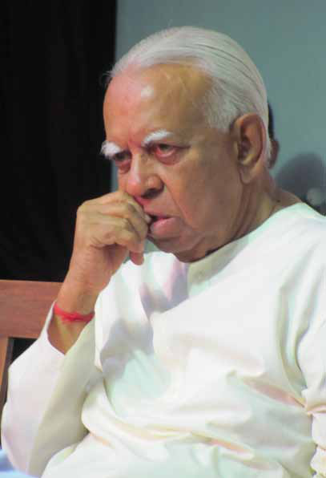

Sampanthan: A Towering Voice of Integrity with International Reputation
Sampanthan: A Towering Voice of Integrity with International Reputation
Jaffna Monitor hellojaffnamonitor@gmail.com 37 Sampanthan: A Towering Voice of Integrity with International Reputation Regardless of opinions, the truth remains that despite various challenges and severe criticisms throughout his career, R. Sampanthan maintained a significant influence in Tamil nationalist politics, particularly within the political landscape of the Eelam Tamils. His stature was unparalleled, with no other contemporary figure able to rival his standing. Sampanthan's influence extended far beyond the Tamil political sphere, earning him widespread respect internationally and from other communities in Sri Lanka. While many Tamil leaders struggled to gain recognition outside their immediate circles, Sampanthan's standing was notably higher on the global stage. His ability to transcend ethnic and national boundaries set him apart, making him a unique and respected figure in both national and international political arenas. Sampanthan's reputation was not solely based on his political activities or leadership qualities but on his unwavering commitment to a moderate and inclusive political stance. This approach garnered him accolades and recognition that few other Tamil leaders could achieve. His diplomatic efforts and dedication to a united Sri Lanka, while advocating for Tamil rights, resonated with the international community and other ethnic groups within the country. His value was greater outside the Tamil sphere than within it. BY: N. Thiruchelvam Opinion

Jaffna Monitor hellojaffnamonitor@gmail.com 38 After the annihilation of the LTTE, Sampanthan's political stance underwent a significant transformation. Moving away from traditional hardline Tamil nationalism, he adopted a notably more moderate approach. He aimed to work inclusively with other ethnic, religious, and linguistic groups, incorporating a multi-ethnic perspective and an international viewpoint into his politics. By distancing himself from the identity associated with the Tigers, Sampanthan sought to reshape the external environment to align with his vision. One of Sampanthan's key objectives was to establish that the Tamil National Alliance (TNA) and its politics were not a continuation or reincarnation of the LTTE. He openly stated this numerous times, believing that only by doing so could he successfully advance his political agenda among the international community, the Sinhalese, and the Muslims. In a symbolic move to support this position, Sampanthan joined then-Prime Minister Ranil Wickremesinghe in Jaffna to hoist the national flag, rejecting the Tiger flag in favor of the Lion flag. This act clearly demonstrated his commitment to a united Sri Lanka and his willingness to break away from the past. Throughout his career, Sampanthan consistently pursued a moderate form of Tamil nationalism. Unlike the hardline stance that fiercely opposed everything, his approach was characterized by a willingness to compromise and seek common ground. He believed that this was the only way to achieve a just solution within a united Sri Lanka, emphasizing the importance of inclusivity and reconciliation. This perspective allowed Sampanthan to boldly advocate for a just federal solution within a united Sri Lanka, earning him respect from both Sinhalese and Muslim communities. Sampanthan's fair understanding of the post- 2009 context drove his belief that post-Tigers politics should aim for unity rather than division. He recognized the need for equality, understanding, and compromise, leaving no room for extremism. Thus, his politics aligned with principles of consensus, agreement, and democracy, which the international community also supported. Sampanthan believed this was achievable in Sri Lanka and steadfastly maintained this as his political stance. He never indulged in cheap politics, and the LTTE era was a black mark on his otherwise integrity-driven political career. He did not amass fortunes through his political endeavors and lived a humble life. In his later years, he was deeply committed to solving the ethnic issue in his own way, and the world also somewhat believed that Sampanthan's time was best suited to solve this never-ending ethnic issue. Ashok Kantha, the former High Commissioner to Sri Lanka, who frequently met with Sampanthan and Mahinda Rajapaksa between 2010 and 2013 to advocate for a solution to the ethnic issue, described Sampanthan in a tweet as a "towering personality and voice of sanity and moderation in [the] fractured polity of Sri Lanka. [He] worked tirelessly for the settlement of the ethnic issue." Kantha added, "I recall telling President Rajapaksa and other Sri Lankan leaders that they should resolve the ethnic issue while Sampanthan was around." This phrase best sums up his international reputation.